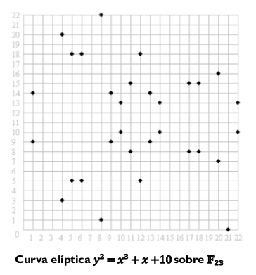
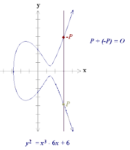
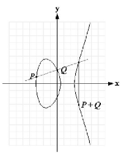
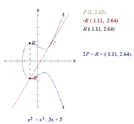
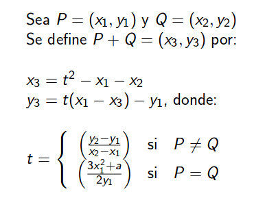
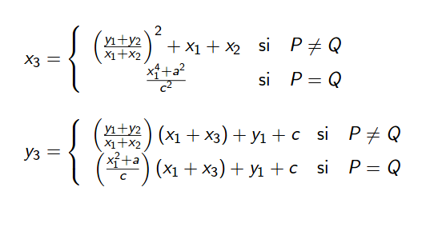

Como ya mencionamos una curva elíptica sobre un cuerpo finito está formada por un conjunto finito de puntos.
Analizando el siguiente gráfico:

- Hay simetría horizontal.
- Nótese que tiene 31 puntos.
- El número de puntos de la curva no es siempre primo, por lo que se elige un subgrupo cíclico suficientemente grande.
Aritmétrica Geométrica
- El opuesto (negativo) de un punto P= (x, y) es su simétrico respecto al eje x : ‒P= (x, ‒y).

Para sumar P y ―P lo anterior no funciona ya que la línea que los une no corta a la curva en otro punto. Para evitar este problema se añade un punto del infinito que se designa por O, y por definición se dice que P+(‒P)=O (y por tanto P + O = P).
- Para sumar dos puntos P, Q (con P≠‒Q ) se traza una línea que los une, que corta a la curva en otro punto R; entonces P+Q = ‒R.

- Para sumar P consigo mismo se traza la tangente en P, que corta a la curva en otro punto ‒ R; entonces 2P = P + P = R.

Caso especial: Si P= (x, 0) entonces la tangente es vertical y no corta de nuevo a la curva. Entonces se establece que 2P = O.
NOTA: Debemos evitar las curvas con singularidades (tangente no es posible cuando discriminante = 0)
El cálculo de la suma:
- es posible deducir fórmulas para calcular la suma
- ellas dependerán de la característica del cuerpo K.
Por ejemplo:
- Si y^2 = (x^3+ ax + b), con 4a^3+ 27b^2 != 0 mod p

- Si y^2+cy= (x^3 + ax + b), con c != 0 mod 2^m
